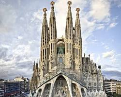
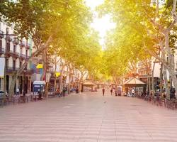
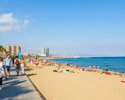

Антоніо Гауді – це, мабуть, найвідоміше ім’я, пов’язане з Барселоною. Його унікальні будівлі, такі як Саграда Фамілія, Парк Гуель та Дом Батльо є одними з головних визначних пам’яток міста.
Барселона – це місто з багатою історією та культурою. Тут ви можете відвідати готичний квартал, де збереглися середньовічні будівлі, а також прогулятися по Ла Рамблас – знаменитій вулиці, повній магазинів, ресторанів та вуличних артистів.
Барселона розташована на узбережжі Середземного моря, тому тут ви можете насолодитися теплим сонцем та чистими пляжами. Пляж Барселонета – один з найпопулярніших серед туристів.
